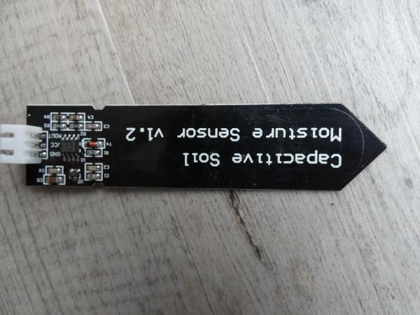
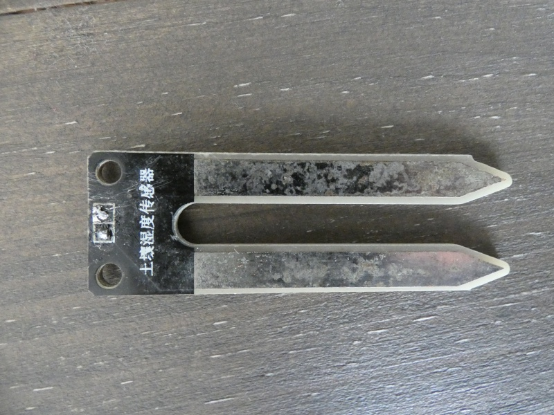

Sensor de humedad capacitivo vs resistivo
Por qué un sensor de humedad capacitivo es generalmente mejor opción que uno resistivo para nuestros proyectos.
Cuando comenzamos un proyecto en el que la medición de la humedad del suelo es un factor básico en la monitorización y el cuidado de nuestras plantas y cultivos, tenemos que elegir un sensor.
Un sensor lo define la RAE como: “Dispositivo que detecta una determinada acción externa, temperatura, presión, etc., y la transmite adecuadamente.”. Aunque una definición más técnica podría ser la siguiente: se trata de un dispositivo que permite detectar cambios físicos o químicos, como por ejemplo la presión o la variación de una carga eléctrica.
En este post vamos a ver la experiencia que tuve con los principales sensores (no profesionales) que hay en el mercado. Podemos diferenciar dos, los sensores resistivos y los sensores capacitivos.
¿Qué es un sensor resistivo?
Un sensor resistivo se basa en el principio de la resistencia de los materiales. Entendemos por resistencia como la capacidad de un cuerpo o material para disminuir la corriente eléctrica que pasa a través de él. Esta propiedad la encontramos en cualquier circuito integrado y son un componente que marca el diseño de nuestros sistemas, y por lo tanto, de nuestra sociedad.
Podemos medir la resistencia como R=ρ*l/A. Donde ρ (rho) es la resistividad, l es la la longitud y A el área transversal o grosor.
Imaginemos un trozo de cobre de:
- 0.20m (metros) de longitud.
- 3.14mm^2 (milímetros al cuadrado) área transversal.
- 0.0172 Ω (ohmios) es la resistividad del cobre.
La resistencia sería R=0.0172*0.2/3.14.
Por lo que a mayor área, la resistencia de un material es menor, por ello en instalaciones de alto voltaje se usan cableados gruesos, para evitar que puedan salir ardiendo. Y a mayor longitud, mayor resistencia. Este último factor, la longitud, lo hemos de tener en cuenta en el diseño de nuestros circuitos porque puede producir problemas.
Además, la temperatura es otro elemento que afecta a la resistencia. Por lo tanto, los factores que influyen el la resistencia de un material son:
- Temperatura
- Resistividad
- Área
- Longitud
Un sensor resistivo es aquel entonces que mide el cambio de la resistencia de un material, en el caso del sensor de humedad de suelo, el material será el propio suelo. Estos sensores se componen de dos sondas recubiertas de un metal conductor (electrodos) y miden la resistencia que ofrece el suelo, a mayor cantidad de agua, mayor cantidad de sales disueltas y menor resistencia.
Y a menor cantidad de agua, justo lo contrario. Es importante tener en cuenta que el agua destilada o de lluvia no conduce la electricidad, por ello es por lo que hablamos de sales disueltas.
¿Qué es un sensor capacitivo?
Este tipo de sensores trabajan básicamente midiendo la los cambios en una propiedad eléctrica llamada capacitancia.

Y podemos definir la capacitancia como la reacción que se produce en dos materiales conductores separados entre sí a muy poca distancia, al aplicarles una carga eléctrica.
Imaginemos dos placas de metal separadas entre sí por un centímetro.
-
Cuando se les aplica un voltaje continuo, lo que sucede es que se crea un campo eléctrico que hace que los iones con carga positiva y con carga negativa se redistribuyan en ambas placas de forma ordenada, es decir, las cargas positivas en un lado y las negativas en otro.
-
Cuando se les aplica un voltaje alterno, las cargas se mueven de una placa a otra generando una corriente eléctrica, por el propio movimiento de los iones con carga positiva y negativa. Esta corriente que se genera es la que mide el sensor.
La capacitancia está influida por tres factores:
- Área
- Dieléctrico (es el material entre las placas conductoras)
- Distancia.
El dieléctrico por lo tanto, va a ser el suelo. Y además es lo único que va a cambiar de estado, el resto va a ser constante. De este modo se puede medir la humedad.
La corriente eléctrica que se produce al aplicar un voltaje alterno, varía dependiendo de la capacitancia del dieléctrico, el suelo. Por lo tanto, los sensores capacitivos miden la intensidad de la corriente que se produce y que varía en función del dieléctrico: la humedad del suelo.
Para protegerlo de las inclemencias del exterior, lluvia, humedad o polvo, podemos recubrir el circuito que expone con tubo termoretractil grueso, para así evitar que los componentes electrónicos expuestos se oxiden.
Otros tipos de sensores de humedad de alto rendimiento
Los sensores que he mostrado anteriormente no los podemos considerar profesionales, ni siquiera el capacitivo. Puesto que como veremos en el siguiente apartado presenta problemas, por lo que si queremos fiabilidad hemos de invertir más.
Alguno que podemos encontrar es el SHT-10 también capacitivo u otro tipo de sensores que miden la presión succión como los Irrometer, pero en otro post veremos este punto más en detalle.
Ventajas del sensor capacitivo sobre el resistivo
El sensor resistivo más conocido que nos podemos encontrar es el FC-28, que ronda un precio de varios euros, este es el que yo compré. Para empezar nuestras andadas a un bajo coste es más que suficiente. Pero no nos va a servir para un proyecto en el campo, puesto que los componentes metálicos terminan oxidándose, modificando así la conductividad de los mismos y haciendo que las mediciones sean totalmente inexactas.
Así es como quedó después de un año de uso 
Sin embargo, un sensor capacitivo no expone ningún material que pueda oxidarse con el contacto del suelo, además tampoco va a hacer circular una carga eléctrica a través del suelo y de las raíces de nuestras plantas y cultivos. En otro post comentaré cómo las plantas se pueden ver afectadas por ello, aunque es insignificante.
Otra de las ventajas del sensor capacitivo es que va a trabajar mejor en suelo, esto es debido a que al secarse la tierra, se puede contraer haciendo que los electrodos no estén totalmente en contacto con la tierra y produciendo mediciones inexactas.
Aunque hay que decir que podemos encontrar sensores resistivos resistentes a la corrosión y fiables, como por ejemplo el SM150T.
Elementos a tener en cuenta
Tanto el sensor capacitivo como el resistivo van a necesitar estar bien fijados en el suelo. Al igual que ocurre con nuestras plantas al trasplantarlas, necesitamos que no quede ninguna bolsa de aire entre el sensor y el suelo. Al menos, esta premisa es cierta para los sensores de bajo coste que podemos encontrar en el mercado. Si vamos hacia sensores profesionales, la cosa cambia.
¿Por qué es necesario? Si dejáramos un espacio entre el sensor y el suelo, corremos el riesgo de medir la humedad como si estuviéramos en el aire. Al menos es la experiencia que he tenido con los sensores baratos.
En el caso del resistivo, la carga eléctrica no va a circular del mismo modo, por lo que la medición sería incorrecta. En el caso del capacitivo, el dieléctrico no va a ser el suelo, sino el aire, por lo que, de nuevo, la medición va a ser incorrecta.
Conclusión
Para proyectos que no sean industriales, si necesitas aprender y tienes poco presupuesto, te recomendaría un sensor resistivo. Pero si, por el contrario, quieres hacer algo que tenga que sobrevivir en el campo, te recomiendo un sensor capacitivo o bien invertir en un sensor industrial.
Hemos visto que, tanto el sensor capacitivo, como el resistivo pueden perfectamente ser usados con alta fiabilidad, en proyectos de agricultura. Simplemente hay que encontrar el fabricante y producto que mejor se adapte, por lo que deducimos que el uso de una tecnología u otra no es, a priori, 100% determinante siempre y cuando los sensores sean de calidad y ofrezcan lo que buscamos.